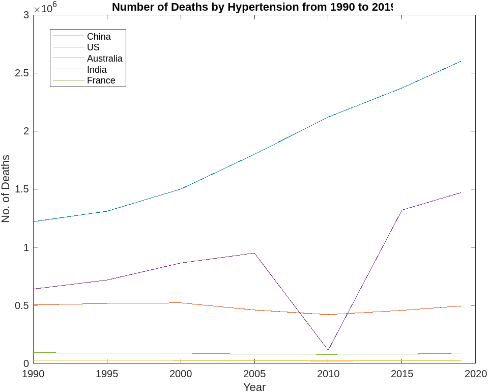

Diabetes
Result

Peason Correlation
Data: China Diabetes and Working Hours
t = 4.338, df = 5, p-value = 0.007443
95 percent confidence interval:0.4107306 0.9835596
sample estimates:cor 0.8888606
US: Australia: India: France:
Obesity
Result

Peason Correlation
Data: China Obesity and Working Hours
t = 2.9912, df = 5, p-value = 0.0304
95 percent confidence interval:0.1206715 0.9693387
sample estimates:cor 0.8009456
US: Australia: India: France:
Hypertension
Result

Peason Correlation
Data: Hypertension and Working Hours
t = 4.338, df = 5, p-value = 0.007443
95 percent confidence interval: 0.4107306 0.9835596
sample estimates:cor 0.8888606
US: Australia: India: France: